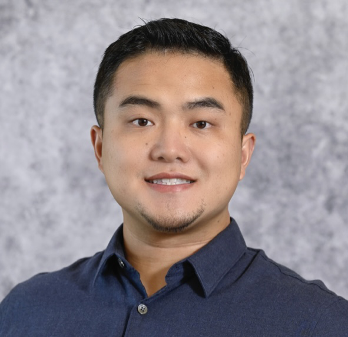

|
Dongkuan (DK) Xu / 胥栋宽
Hello! I am an Assistant Professor at NC State CS, leading the NCSU Generative Intelligent Computing Lab and working on machine learning, natural language processing, and computer vision. I have been honored with the Microsoft Accelerating Foundation Models Research Award 2024, the NCSU Carla Savage Award 2024, and the Best Paper Award of ICCCN 2023. I received my Ph.D. at Penn State, and received my M.S. and B.E. at the University of Chinese Academy of Sciences and Renmin University of China, respectively.
I has been collaborating with Microsoft Research exploring trustworthiness evaluation and efficient hyperparameter-architecture search of Foundation Models, and with Google DeepMind to enable scalable and adaptive learning for Vision-Language Models. I was an intern research scientist at Moffett AI, investigating low-resource model compression. I also spent some wonderful time at NEC Labs America on contrastive learning and multi-task learning.
Other than my work, I am a big fan of American football. I love Nittany Lions, New York Giants, and Dallas Cowboys. I also like workout and soccer ball.
Email /
CV (Oct 2023) /
Twitter /
Google Scholar /
LinkedIn
I'm looking for multiple PhDs / interns, particularly from underrepresented groups, to work on Generative AI. Feel free to send me your CV. Once we have a commitment to each other, I will do my best to help you!
|

|
News
- 05/2024: Keynote speakers for DCgAA workshop at DAC'24 were announced: Andreas Andreou (JHU), Farinaz Koushanfar (UCSD), Massoud Pedram (USC), Vijay Janapa Reddi (Harvard), Zhibin Xiao (CASPA & AI Startup). See u in San Francisco!
- 05/2024: A paper on digital twin-assisted reliable edge caching for wireless networks was accepted to IEEE JSAC (IF=16.4)
- 05/2024: A paper on algorithm-hardware co-design for real-time vision Transformer was accepted to CODES+ISSS'24
- 04/2024: Will mentor Wake STEM Early College High School students in GCSP-REU Summer Program 2024
- 04/2024: A paper on big model alignment was accepted to IJCAI'24 Survey Track
- 04/2024: A paper on LLM-powered code comprehension was accepted to IJCAI'24
- 04/2024: A paper on diffusion model-augmented wireless networks was accepted to IFIP/IEEE Networking'24
- 04/2024: Invited to serve on the NSF Core Program panel
- 03/2024: The 2nd Workshop on Resource-Efficient Learning for Knowledge Discovery was accepted to KDD'24
- 03/2024: Gave a talk at NCSU Forest Carbon Solutions Initiative: Foundation Models for Geospatial Analytics
- 03/2024: Gave a talk at Fo Guang Shan Buddhist Temple [link]: Impact of AI on Our Lives and Beyond [News, in Chinese]
- 03/2024: A paper on reliable sparse training was accepted to Transactions on Machine Learning Research
- 03/2024: Received the The Carla Savage Award [News]
- 02/2024: A paper on explaining predictions made by graph neural networks was accepted to IEEE PAMI (IF=23.6)
- 02/2024: Workshop on Deep Learning-Hardware Co-Design for Generative AI Acceleration was accepted to DAC'24
- 02/2024: Our DDCV workshop@CVPR'24 is looking for submissions. We will offer 3 free registration for students!
- 02/2024: Received a Gift Fund from Microsoft
- 01/2024: Received the Microsoft Accelerating Foundation Models Research Award [News]
- 01/2024: Our proposal of The 1st Workshop on Dataset Distillation for Computer Vision was accepted to CVPR'24
- 12/2023: Gave a talk at STARS AI Scholars Program: How LLMs Work and Cutting-Edge Research on Generative AI
- 12/2023: A paper on large language model education was accepted to AAAI/EAAI'24
- 12/2023: A paper on neural architecture search for Spiking Transformers was accepted to ICASSP'24
- 11/2023: Our work, AGENT [link], was accepted to CPAL'24 as Oral Paper
- 10/2023: Gentopia was accepted to EMNLP'23 (System Demo)
- 10/2023: Two papers (Robust LLM Pruning + Controllable Randomized Pruning) were accepted to EMNLP'23
- 10/2023: A paper on code generation in domain-changing environments was accepted to EMNLP'23 Pan-DL Workshop
- 09/2023: A paper on personalized federated learning was accepted to NeurIPS'23
- 09/2023: My mentored undergraduate, Zihan, received COE REU Award ($3,000). Congrats Zihan.
- 09/2023: Gave a talk at Microsoft Research Asia: Sculpting the Future of Collective Growth in Collaborative AI
- 09/2023: Invited to serve as an Area Chair for LREC-COLING'24
- 08/2023: Invited to serve on the NSF CAREER panel
- 08/2023: Gave a talk at CoreNet Global: ChatGPT in Corporate Real Estate - Unlocking the Potential [link]
- 08/2023: Released a paper providing more details about Gentopia.AI
- 08/2023: Launched Gentopia.AI. Check out our teams from NCSU, GMU, CMU, UMich, etc.
- 07/2023: Honored to receive the Best Paper Award at ICCCN'23
- 07/2023: A paper was accepted to ICCV'23
- 07/2023: A paper was accepted to CDC'23
- 07/2023: Our ChatGPT Education Workshops [link] are available (co-organized with Tiffany)
- 06/2023: Feel free to check out our ALM work, ReWOO (GitHub) (中文解读 1, 2, 3)
- 06/2023: Invited to serve as a Senior PC member of AAAI'24.
- 05/2023: A paper was accepted to KDD'23
- 05/2023: A paper was accepted to ACL'23
- 04/2023: Our work, E-App, was accepted to ICCCN'23. See u in Honolulu
- 04/2023: A paper was accepted to ICAIBD'23. Congrats to our undergrad, Zihan
- 03/2023: Our work, Acc.DD (paper), was selected as a Highlight (2.5%) of CVPR'23
- 03/2023: Will co-chair RelKD'23: Resource-Efficient Learning for Knowledge Discovery Workshop @KDD'23.
- 02/2023: Two papers on accelerating data/model learning were accepted to CVPR'23. Stay tuned ;-)
- 02/2023: Two papers on dynamic training were accepted to DAC'23.
- 01/2023: Our work, Calibrated Rigged Lottery, was accepted to ICLR'23.
- 01/2023: Our work, Efficient Informed Proposals for Discrete Distributions, was accepted to AISTATS'23.
- 01/2023: Invited to give a talk at Rutgers EFficient AI (REFAI) Seminar on Feb 16, 2023.
- 12/2022: Invited to serve as a journal reviewer for TPAMI and Communications of the ACM.
- 11/2022: Invited to serve as the PC Chair for MLNLP 2022.
- 11/2022: Two papers were accepted to AAAI'23. See you in DC in February
- 10/2022: Invited to serve as a TPC member for ISQED'23.
- 09/2022: Will chair The First Workshop on DeepLearning-Hardware Co-Design for AI Acceleration with AAAI'23
- 09/2022: Our work, AutoDistil (paper), was accepted to NeurIPS'22.
- 09/2022: Invited to give a talk at the CIS Department of the University of Macau.
- 07/2022: Will chair a Research session (Deep Learning: New Architectures and Models) and an Applied Data Science session (Scalable, Distributed Systems & Trustable AI) of KDD'22. Super welcome!
- 07/2022: Will be teachinng CSC 791 Advanced Topics in Efficient Deep Learning at NC State this fall. Feel free to attend!
- 07/2022: A paper, S4: a High-sparsity, High-performance AI Accelerator (paper), was accepted to SNN'22
- 07/2022: Invited to serve as a (Senior) PC member for AAAI'23. and ICLR'23.
- 06/2022: Invited to serve as a Column Editor for ACM SIGAI Newsletter.
- 06/2022: Invited to give a talk at Pinterest (Pinterest Machine Learning Lunch) on August 18, 2022.
- 06/2022: Invited to give a talk at 中科院深圳先进技术研究院 on June 27, 2022.
- 06/2022: Invited to serve as a PC member for WSDM'23, LoG'22, and AACL-IJCNLP'22.
- 05/2022: Invited to serve as a PC member for COLING'22 and a reviewer for the journal TNNLS.
- 05/2022: Invited to give a talk at Amazon Search (A9) on May 20, 2022. ("5.20" >.< "我爱你")
- 04/2022: Invited to give a talk at 将门创投 on May 24, 2022. Welcome!
- 04/2022: Invited to give a talk at Vanderbilt University's Machine Learning Lunch Seminar on May 09, 2022.
- 04/2022: Invited to give a talk at Renmin University of China in May 2022.
- 04/2022: Invited to give a talk at Shenzhen University in May 2022.
- 04/2022: A new US patent application: Bank-balanced-sparse Activation for Deep NN Models.
- 04/2022: Invited to give a talk at University of Connecticut on April 27, 2022.
- 04/2022: Invited to give a talk at UCAS (中国科学院大学) on April 25, 2022.
- 04/2022: Invited to give a talk at New York Institute of Technology's Research Seminar Series.
- 04/2022: Organizing MLNLP Community's 6th Academic Seminar.
- 04/2022: Third place winner (Eng.) in the 37rd annual PSU Graduate Exhibition (News).
- 03/2022: Invited to serve as a PC member for NeurIPS'22.
- 02/2022: A paper, Sparse Progressive Distillation (code, paper), was accepted to ACL'22
- 02/2022: Invited to serve as a PC member for CIKM'22.
- 12/2021: Thanks to MLNLP (机器学习与自然语言处理) for reporting our work SparseBERT.
- 12/2021: Code released for SparseBERT (NAACL'21) (code, paper)! Feel free to use it.
- 12/2021: Invited to serve as a PC member for ICML'22.
- 12/2021: Invited to give a talk "Parameter Efficiency: Democratizing AI at Scale" at Brandeis University (slides).
- 11/2021: Invited to serve as a PC member for KDD'22 (both Research and Applied Science Tracks).
- 10/2021: Our ML&NLP academic community is officially launched (>500k followers).
- 10/2021: Received IST Fall 2021 Travel Award.
- 09/2021: Our work, InfoGCL, was accepted to NeurIPS'21
- 08/2021: Invited to serve as PC member for AAAI'22, ACL Rolling Review'22., SDM'22.
- 07/2021: Received complimentary ACM student membership. Thanks you ACM.
- 06/2021: Invited to serve as a PC member for ICLR'22, WSDM'22, IJCAI-ECAI'22.
- 05/2021: Received NAACL 2021 Scholarship.
- 05/2021: A paper was accepted to ACL'21!
- 05/2021: Excited to join Microsoft Research as a research intern working on neural architecture search.
- 04/2021: Gave a talk titled "BERT Pruning: Structural vs. Sparse" at Brandeis University (slides).
- 04/2021: Gave a talk titled "BERT, Compression and Applications" at Xpeng Motors (小鹏汽车) (slides).
- 03/2021: My application to SDM'21 Doctoral Forum has been accepted.
- 03/2021: Received a SIAM Student Travel Award to attend SDM'21.
- 03/2021: Our work, SparseBERT, was accepted to NAACL'21. Along with three U.S. patent applications
- 03/2021: Invited to serve as a PC member for NeurIPS'21, EMNLP'21, CIKM'21.
- 03/2021: Received IST Spring 2021 Travel Award.
- 12/2020: A paper was accepted to SDM'21.
- 12/2020: Invited to serve as a Senior PC member for IJCAI'21.
- 12/2020: Four papers were accepted to AAAI'21.
- 12/2020: Invited to serve as a PC member for ICML'21, KDD'21, NAACL'21, IJCNN'21.
- 09/2020: Our work, PGExplainer, was accepted to NeurIPS'20.
- 08/2020: Invited to serve as a PC member for AAAI'21, EACL'21, a journal reviewer for Information Fusion.
- 08/2020: Received KDD 2020 Student Registration Award.
- 06/2020: Invited to serve as a reviewer for NeurIPS'20.
- 05/2020: Happy to join Moffett AI as an intern research scientist.
- 04/2020: A paper was accepted to SIGIR'20.
- 03/2020: Invited to serve as a PC member for EMNLP'20, KDD'20, CIKM'20, AACL-IJCNLP'20.
- 02/2020: Received IST Spring 2020 Travel Award.
- 12/2019: Invited to serve as a PC member for IJCAI'20, IJCNN'20.
- 12/2019: Received AAAI 2020 Student Scholarship.
- 11/2019: Two papers were accepted to AAAI'20. See you in the Big Apple.
- 08/2019: Invited to serve as a PC member for AAAI'20.
- 08/2019: A paper was accepted to ICDM'19.
- 05/2019: A paper was accepted to IJCAI'19.
- 05/2019: Happy to join NEC Labs America as a research intern.
- 03/2019: Received IST Spring 2019 Travel Award.
- 01/2019: Grateful to receive The Award for Excellence in Teaching, IST (News).
- 01/2019: Invited to serve as a PC member for IJCNN'19.
- 12/2018: A paper was accepted to SDM'19. See you in Calgary.
- 05/2018: Started working at NEC Labs America as a research intern.
- 11/2017: Invited to serve as a PC member for IJCNN'18.
|
|
Research
My research is fundamentally grounded in exploring and advancing Artificial General Intelligence, with particular emphasis on studying the autonomy of intelligent agents, reasoning reliability, and resource efficiency in Generative AI Systems. My research group provides full-stack solutions, ranging from theoretical optimization methods and data-centric strategies to the development of efficient deep learning techniques and the co-design of algorithms and hardware. My long-term research goal is to liberate AI productivity and democratize its application to serve a broader range of populations and real-world applications, equally, sustainably, and responsibly.
Task Planning / External Tool Use of Large Language/Vision Models
Reliable & Scalable Reasoning of Large Language/Vision Models
Data/Tool Generation, Retrieval & Optimization
Algorithm-Hardware Co-design for Generative AI Acceleration
Applications: Education, Agriculture, Networking, Scientific Discovery, Transportation, Healthcare
|
|
★ Representative Work: Gentopia.AI [link]
|
*Last updated on 06/10/2024*
|
|
{kind=link}